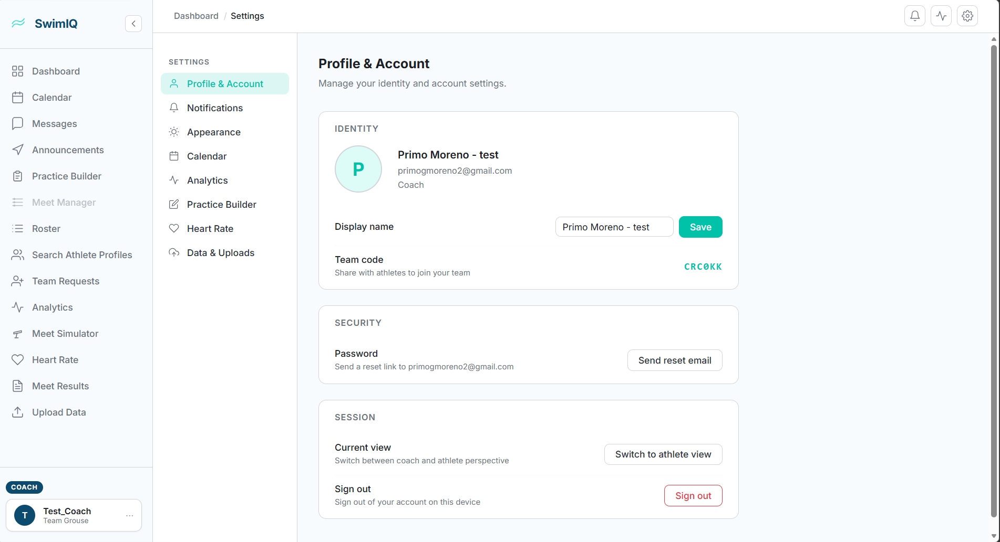
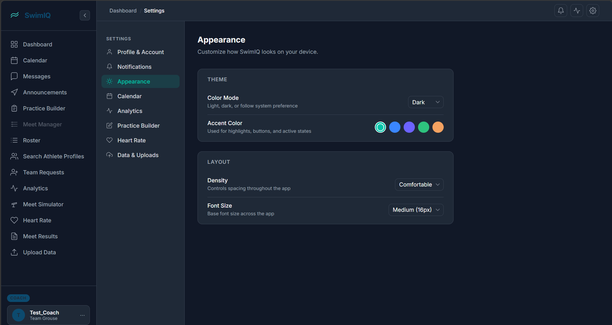
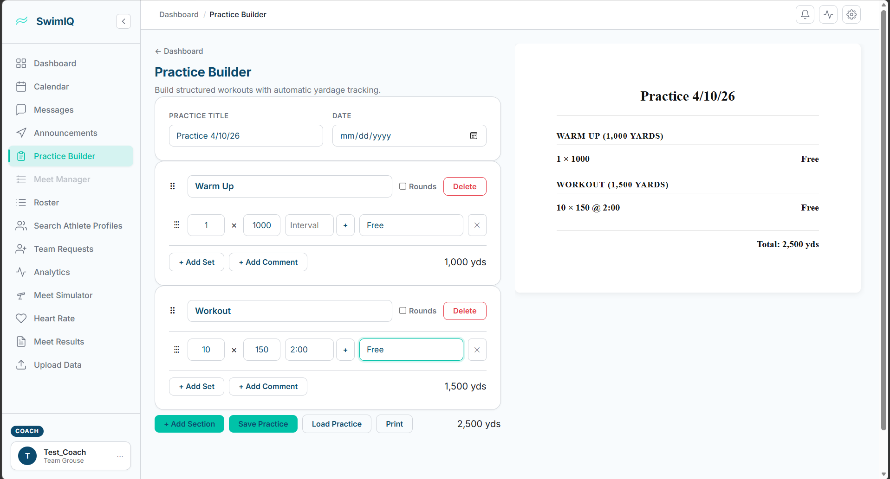
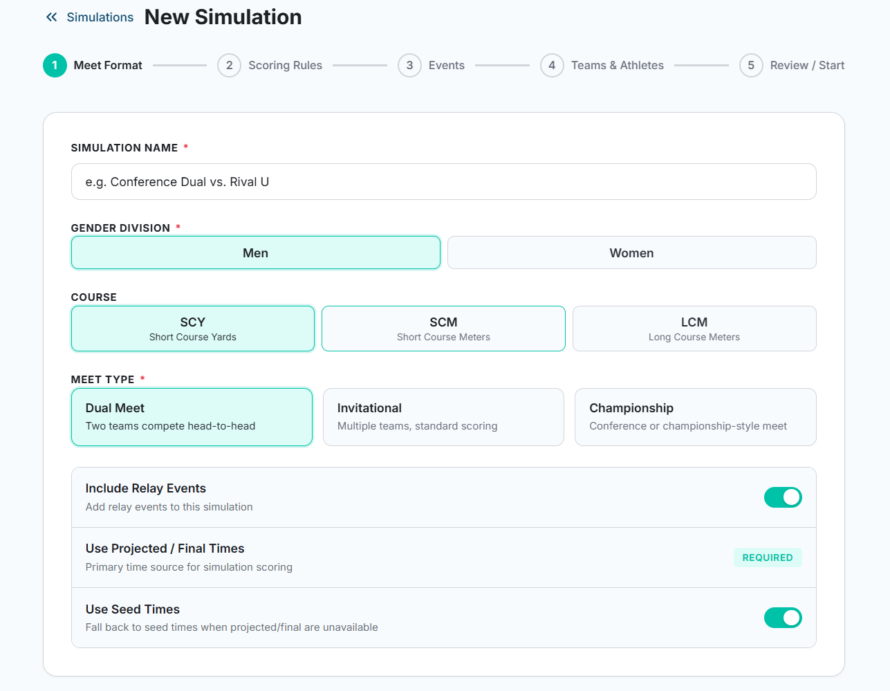
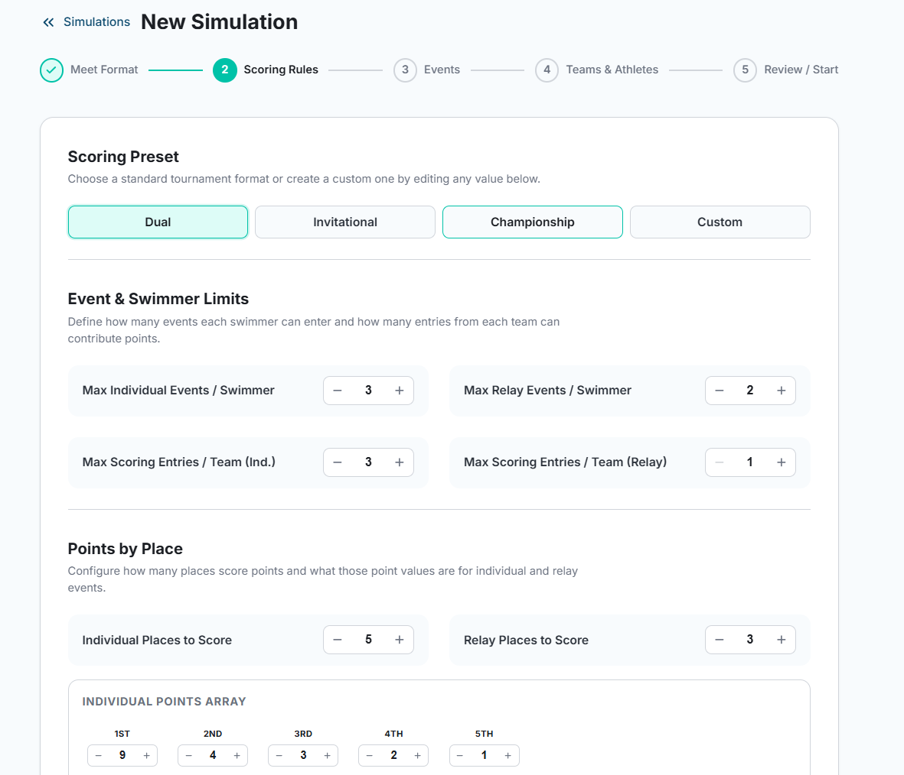
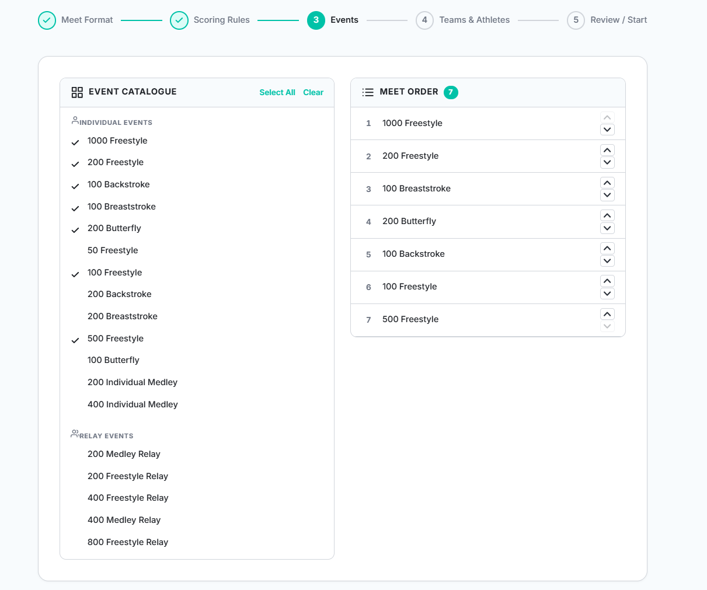
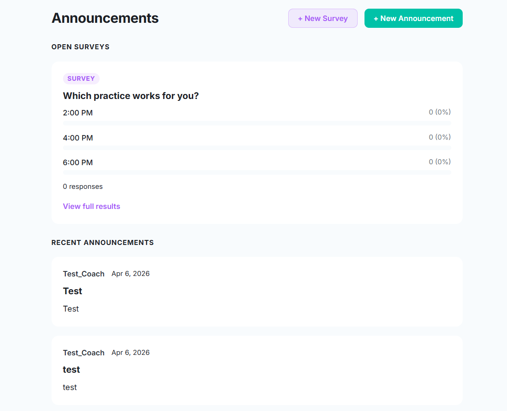
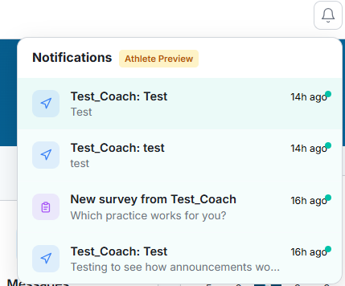

The past two weeks represent the largest single burst of progress SwimIQ has seen. We shipped an entirely new monorepo structure, launched the Meet Simulator MVP, bootstrapped the mobile app with full heart rate monitoring, overhauled the settings experience, and added a real-time communication layer. There is a lot to cover, so let’s get into it.
Infrastructure: Monorepo Restructure
The biggest architectural change of the sprint was reorganizing the entire project into a proper monorepo. Previously, logic and utilities were scattered — or worse, duplicated — between the web and mobile codebases. The new layout uses Yarn workspaces and is organized into four clear areas:
- apps/web — the React web application
- apps/mobile — the new Expo/React Native app
-
packages/logic — shared business logic
(
userData.js,index.js) consumed by both apps - packages/api — a shared API abstraction layer used across the monorepo
Firebase auth, user settings, and team data operations now live in
packages/logic as reusable modules rather than being copy-pasted
between apps. Yarn workspaces ties it all together with a single
yarn install at the repo root.
We also took this opportunity to formalize the Firestore data model. Team-level data now lives in a dedicated TeamData collection and per-user data in a separate UserData collection, keeping them cleanly isolated from each other.
Web App
Full Settings Page
The app now has a proper, fully featured Settings page built from scratch in
SettingsPage.jsx. It’s organized into nine sections:
Profile & Account, Appearance, Analytics, Calendar, Data Uploads,
Heart Rate, Notifications, Practice Builder, and Privacy.
Every preference a coach or athlete might need to tweak lives in one place.
The Profile & Account section surfaces identity info (display name, email, role), a shareable team code coaches can hand out to athletes, a password reset flow, and a “Switch to athlete view” toggle right in the session card — so coaches can preview the app from an athlete’s perspective without needing a second account.

Preferences are persisted to Firestore so they survive across sessions and devices. We also fixed a bug where settings were appearing twice on the page due to a double-render in the data fetching flow.
Dark Mode
Dark mode support has been added across the app, including the settings page, login page, and sign-up page. The Appearance section is where users toggle it, and it also exposes an accent color picker and layout controls (density and font size) so teams can tailor the look to their preference. The preference is saved to Firestore alongside everything else.

Collapsible Sidebar & Notification Toggles
The sidebar can now be collapsed to save screen real estate, which is especially useful on smaller monitors or when coaches want to focus on a single view. Notification controls have also been added to the Settings page, with separate toggles for in-app and email notifications.
Practice Builder Improvements
The Practice Builder received several quality-of-life improvements this sprint. Drag-and-drop has been refined and extended — sets within a practice can be reordered, and now entire sections can be dragged to a new position as well. The interaction is noticeably cleaner and more polished than before.
Coaches can now add comments to individual sets via the new “+ Add Comment” button visible beneath each set row, which is useful for coaching cues or notes on a specific interval. The section yardage display has also been relocated to a more intuitive position in the UI (bottom-right of each section card), and a bug affecting how rounds were calculated has been resolved.

Meet Simulator — MVP Launch
This was the feature our client specifically requested after the Sprint One demo, and we shipped it. The Meet Simulator lets coaches configure a hypothetical meet, run it against real historical time data, and see projected scored results. Setup is a guided five-step wizard.
Step 1: Meet Format
The first step lets coaches name the simulation and configure the top-level meet parameters: gender division, course (SCY / SCM / LCM), and meet type (Dual, Invitational, or Championship). Toggles control whether relay events are included and whether projected/final times or seed times are used as the primary time source.

Step 2: Scoring Rules
Step two exposes full control over scoring. Coaches can pick a standard preset (Dual, Invitational, or Championship) or define a custom ruleset. The form lets you set max individual and relay events per swimmer, max scoring entries per team, the number of places that score, and the exact points awarded per place for both individual and relay events.

Step 3: Events
The events step presents a full catalogue of individual and relay events split into two panels: a checklist on the left to select events, and a live “Meet Order” list on the right that updates as events are checked. Coaches can reorder events in the meet order using the up/down arrows on each row.

Steps 4 and 5 handle team and athlete assignments and a final review before
the simulation runs. Under the hood, a scoring.js engine
handles points calculation, validation.js enforces event
eligibility rules, and events.js defines the full event list.
Draft simulations are persisted so coaches can save work and return later.
The backend grew to match — new API endpoints in
swim-iq-backend/app/main.py load .cl2 meet result
files and return scored, ranked results. A large batch of historical
.cl2 files from Augustana, CCIW, and opponent meets spanning
2024–2026 gives the simulator a realistic performance model to draw from.
Communication Layer
A full communication system has been added to the web app. The Announcements page doubles as the hub for surveys and team-wide posts. Coaches can create a new survey (which athletes answer directly from a notification) or post a plain announcement. Both show up in the same feed so nothing gets buried.

Real-time direct messaging between users is handled by
MessagesPage.jsx and a messages.js Firebase
library. Supporting all of this is a new
NotificationsContext.jsx that manages in-app notification state
across the app, surfacing messages, announcements, and survey invites in
the notification bell at the top of every page.

Authentication Improvements
The sign-up and profile setup flows now collect first name, last name, and date of birth. This data feeds into athlete profiles and will eventually be used for age-group event eligibility in the simulator.
We also fixed a bug that was preventing email/password login from working correctly (Google Auth was fine, but standard login was silently failing). That is now resolved. The login and sign-up pages have also been updated to fully support dark mode.
A small but noticeable label fix: the tab previously mislabeled as “Roster” is now correctly labeled “Search Athlete Profiles.”
Mobile App
Initial Setup
The mobile app has been bootstrapped as a new Expo/React Native project at
apps/mobile/ inside the monorepo. The iOS native project is
fully configured with an AppDelegate.swift, entitlements, a
splash screen storyboard, Info.plist, a privacy manifest, and
an app icon. A scripts/dev-ios.sh script streamlines the iOS
development workflow so any team member can spin up the simulator quickly.
Heart Rate Monitoring
Heart rate is one of SwimIQ’s core differentiators, and this sprint we built out three distinct data sources for it on mobile:
-
HealthKit (iOS) —
HealthKitService.tsreads heart rate data directly from Apple Health on iPhone. -
HealthConnect (Android) —
HealthConnectService.tsprovides the equivalent integration for Android devices. -
BLE Heart Rate Monitors —
BleHeartRateService.tsconnects directly to Bluetooth Low Energy chest strap monitors, which is critical for in-pool use since phones cannot be in the water.
Heart rate sessions are saved to Firebase and retained for two weeks. Two
dedicated screens surface this data: heart-rate.tsx for
athletes viewing their own history, and team-hr.tsx for
coaches monitoring the whole team with aggregated HR insights. On the
backend, heart_rate_tasks.py handles async ingestion and
polar.py adds Polar monitor support via their API.
Role-Based Access Control
Athletes and coaches see fundamentally different apps. A new
ViewContext.tsx manages the current role and view mode
(coach vs. athlete) throughout the mobile app. Athlete accounts are locked
out of coach-only pages — lift builder, meet builder, roster
management, file upload — and redirected appropriately. The same
“Switch to athlete view” toggle available on the web settings
page lets coaches preview the athlete experience on mobile without a
separate account.
Schedule & Dashboard
The schedule screen received improvements to event display and navigation, and the dashboard layout has been streamlined for both coach and athlete views to reduce clutter and surface the most relevant information first.
What’s Next
We’re entering the final stretch of the semester. The major items on the horizon include:
- AI Set Designer: A Gemini-powered practice set generator to help coaches build creative workouts faster.
- Meet Simulator Optimization: A lineup optimization algorithm to suggest the best athlete-event assignments for a given meet.
- Mobile Polish: Continue refining the mobile experience, particularly the athlete-facing flows and heart rate visualizations.
- Production Hardening: Input validation, auth guardrails, and security review before we hand the app off to our client.
Two weeks of heavy lifting have put us in a great position heading into the final sprint. See you next week!